Крупнейшая в Петербурге Кулинарная школа № 1 учит взрослых и детей вкусно готовить. Задача сайта — помочь посетителям выбрать кулинарный курс или мероприятие.
Сайт встречает посетителя яркой витриной, которая знакомит со школой и рассказывает о курсах и мастер-классах. Визитная карточка школы — шеф-повар, встречающий гостей на главной странице.
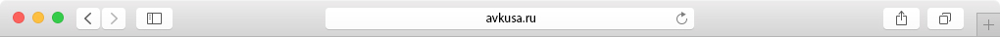

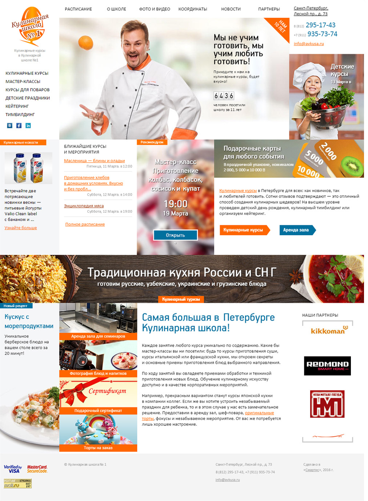
Результаты после публикации
Для каждого курса мы подобрали несколько ярких фотографий и переписали анонсы: сократили тексты, убрали «воду» и добавили интересные факты. Подготовили фотографии и описания для всех блюд.
Клиенты записываются на курсы, а сайт подскажет, когда будет ближайшее занятие и сколько осталось мест.
+41%
продажи и звонки
3,5 → 5,1
просмотры страниц
2:30 → 5:30
время на сайте
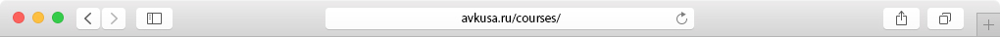
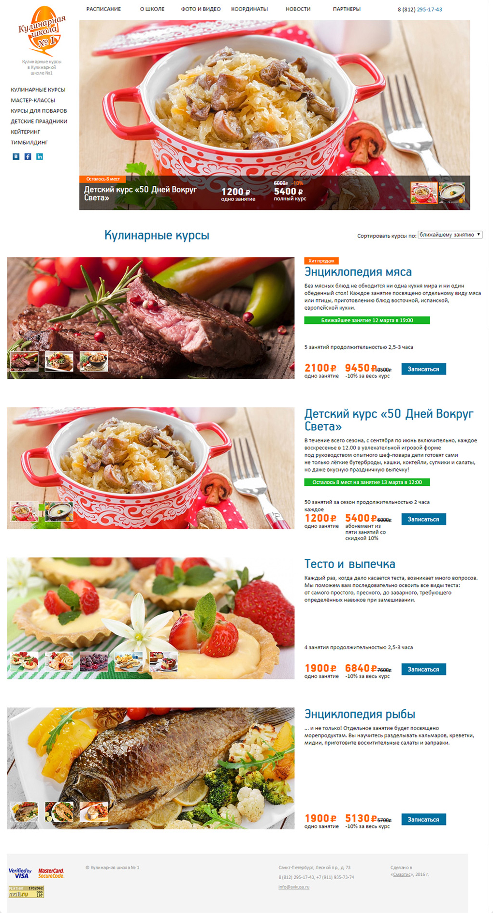
Простой и понятный текст помогает посетителю принять решение о заказе. Мы убрали «воду» из текстов, чтобы клиент меньше тратил времени на чтение и добавили полезную информацию:
Было
Уровень проведения корпоративных мероприятий, презентаций, конференций стал неотъемлемой частью стиля компании и ее образа в глазах партнеров, сотрудников и конкурентов. Профессионализм и опыт наших специалистов позволяет организовывать кейтеринг в Санкт-Петербурге и Ленинградской области для любых тематических праздников и крупных знаменательных событий.
Если вы заинтересованы в безупречном качестве проводимых от лица вашей организации представительских мероприятий, выбор «Первой кулинарной школы» в качестве партнера будет разумным решением.
Стало
Кулинарный тимбилдинг — это корпоративные мероприятия, призванные научить людей работать в команде. Под руководством профессионального повара участники приготовят несколько блюд и узнают много нового из мира кулинарии.
Мы проводим тимбилдинг как на территории школы, так и на природе. Мероприятие может быть организовано как для рабочего коллектива, так и для компании друзей.
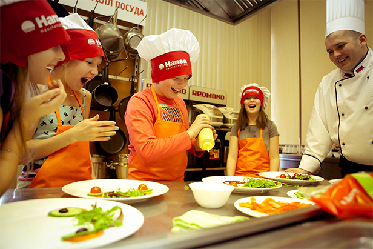
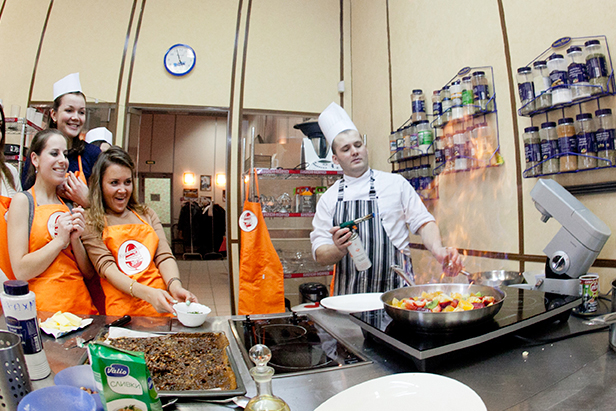
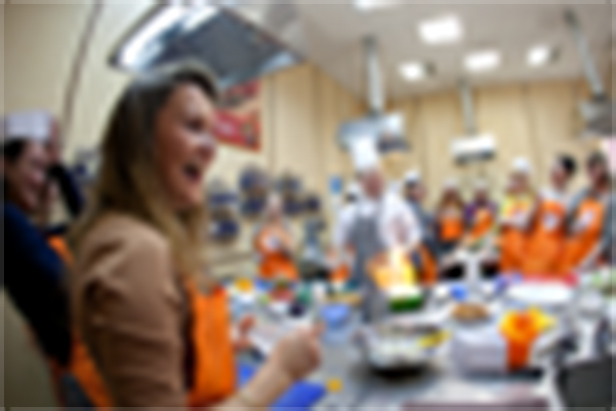
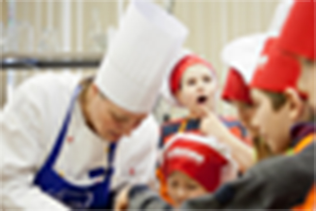
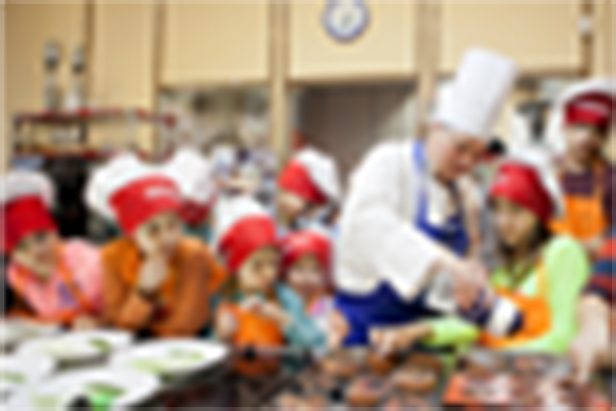
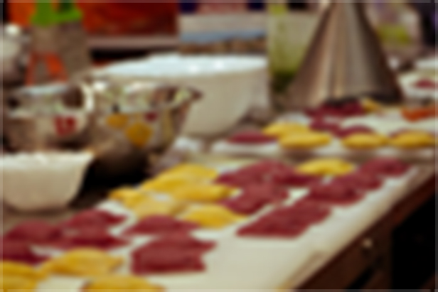
Мария Переродина сфотографировала несколько курсов и праздников в Кулинарной школе. Мы попросили Машу в первую очередь запечатлеть эмоции, ведь приготовление блюд — это творческий процесс. Результат — яркие фото для сайта и полиграфии
Школа фотографирует почти каждый курс или мастер-класс. Фото публикуются в разделе «Фото и видео» и в группе Вконтакте. Мы ушли от скучного «конвейера» однотипных фото при создании страницы. Интересные фотографии больше обычных, а менее важные — совсем мелкие. Благодаря контрастам такую ленту интересно разглядывать:
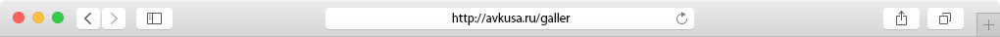
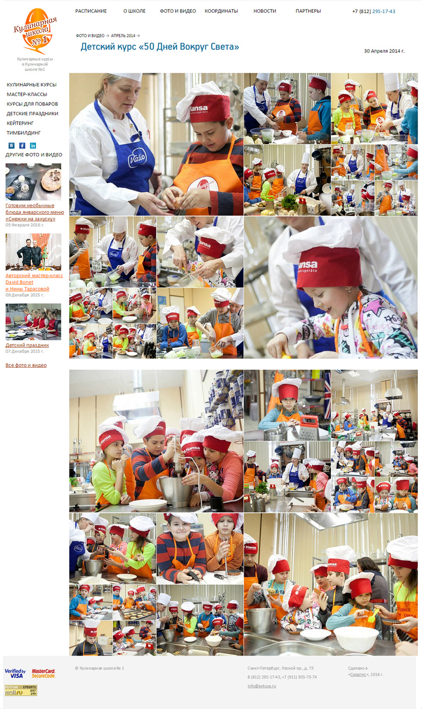
Для школы сайт — не только источник заказов,
но и система управления отношениями
с клиентами
Запись на курс сохраняется в системе управления. По каждому курсу мы видим, сколько осталось мест и кто записался. Также история заказов ведётся по клиентам: какие курсы и когда они посещали.
Постоянным посетителям сайт рассылает приглашения и показывает подходящие баннеры.
Например, мамам записавшим детей на детский курс — предложит провести детский день рождения в Кулинарной школе.
Система определяет, есть ли места на курс. Если нет, предлагает оставить заявку на следующий. Администратор подтвердит запись и известит заранее о начале занятий.
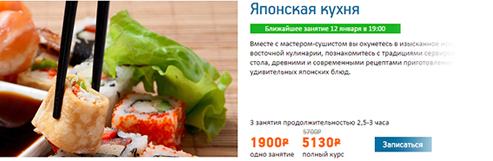
Раньше мы вручную обновляли баннеры и это отнимало много времени. Было много ошибок: надо убрать анонс курса, если мест уже нет. Также не забыть поставить другой баннер, когда занятие началось.
На новом сайте баннеры показываются автоматически. Система ранжирует ближайшие курсы по загрузке и показывает те анонсы, которые будут интересны пользователям. Как только начался курс или закончились места — баннер уже не показывается.
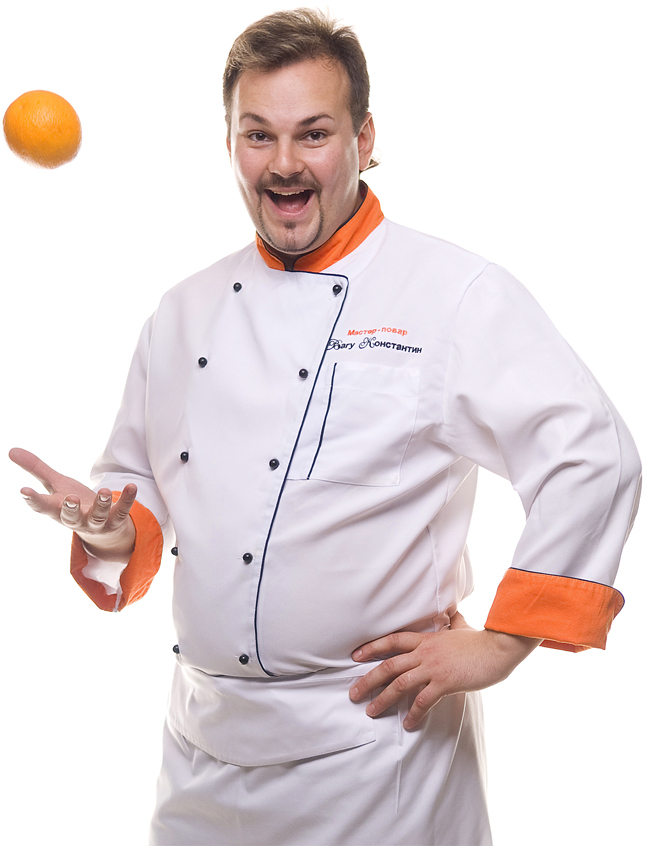
Работа по итерациям
Сайт Кулинарной школы — наш первый проект, который менялся в процессе создания. Мы работали по месячным итерациям и правилу «работающий сайт — это процесс, а не результат».
Сначала опубликовали начальную версию сайта с самым необходимым функционалом. Потом шла работа по ежемесячному плану, утверждаемому с клиентом. На протяжении года сайт рос и менялся.
Мы отказались от некоторых первоначальных идей, так как на проверке выяснилось, что они не нужны. Зато доработали детали, которые всплыли в процессе работы и не были учтены.
С каждым месяцем мы улучшаем сайт и создаём новые разделы. Тестируем новые решения и увеличиваем конверсию. Такая работа подразумевает доверие между клиентом и студией.
Спасибо за понимание директору
Кулинарной школы №1 Юрию Хритоненко.
Страница со списком кулинарных курсов: